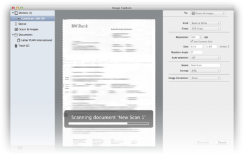
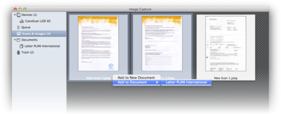
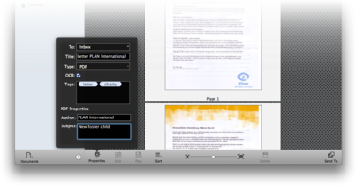

|
|
|
Capturing paper |
|
DEVONthink Pro Office comes with built-in support for Image Capture compliant scanners, as well as for the Fujitsu ScanSnap. DEVONthink Pro Office automatically makes scanned documents searchable by using optical character recognition (OCR). OCR adds an invisible text layer to the scanned file that is computer-readable and searchable--a layer that is recognized by DEVONthink Pro Office's AI engine. For best results we recommend scanning at 150 dpi in color and with 100 percent quality.
To capture paper using an Image Capture compliant scanner open the Image Capture window using File > Import > From Scanner or Camera . It is divided into a sidebar and a main pane, which changes depending on your selection in the sidebar. The options in the sidebar are arranged from top to botton according to a typical scan workflow: Scan, check the scanned pages, arrange the pages in a document, and save them to the database. If you are using a scanner with an automatic document feeder (ADF), you can also use a Queue to prepare a pile of sheets for batch processing and scan them in one go. Devices  Select your connected scanner or camera in the Devices section of the sidebar to run a scan or download images. Note: iPhones, iPads, and iPods are treated like cameras. The main pane shows the standard capture interface that Apple Image Capture uses. Choose the scan destination in the To pop-up menu. Either send the scan directly to any of your databases, add them as single files to the Scans & Images section, or choose any document that you have created in the Document section. Scanners: DEVONthink Pro Office generates an overview scan of the current page in the scanner, and allows you to select which parts of the page you want to capture and set the scan options. Click Scan to capture the page. Cameras: DEVONthink Pro Office shows the available images. Select the images you want to import, rotate them if necessary, and click Download or Download All to download the images to your computer. You can also delete images from your camera with the Delete button.
Scans & images  This is where scans or images downloaded from your camera appear. Select images to set their properties, edit (crop, rotate), play downloaded movies, or delete. If you do not need to collect multiple pages into a single document, all you need to do is set the scan's properties and send it to your database. In the properties window, choose a destination group (the global inbox is set by default) and enter title and tags. You can also choose if you want to save this scan as an image or PDF document. Check OCR to convert this scan to a searchable PDF after importing. For PDFs you can also set the author and subject properties. Then click the Send To button to directly import this scan. If you are using a single-sheet flatbed scanner and want to collect multiple pages into one document, first create a new document using the Documents button at the bottom of the sidebar, then drag the pages to the new document in the Documents section to manually build the document. Documents  Create empty documents here to which you add your scanned pages. Right-click or click with ⌃Control held to use the contextual menu for adding or deleting documents. Alternatively, use the Documents button at the bottom of the sidebar. Add pages by dragging them from the Scans & Images to the document in the sidebar. Rearrange added pages if desired and set the document properties by clicking the Properties button. This is similar to single scans in the Scans & Images section. Use the Sort to reverse the sort order or shuffle pages, e.g., when scanning all front pages first, then the back pages. Choose Sort and Merge Documents to merge two documents where one contains all the odd pages and the other all even pages.
Trash This is where you find images that you have deleted from Scans & Images or Documents . Empty the trash using the Empty button at the bottom of the window or right-click or ⌃Control-click images to add them to an existing or new document using the contextual menu. Queue
If you are using a document scanner with automatic document feeder, you can use the queue to add multiple pages or even multi-page documents to the feeder and scan them in one go. Choose your scanner in the pop-up menu above the list. Then use the Add and Delete buttons to add or delete steps and rearrange them by dragging. Edit the fields to set a title or tags, or to change the document type or destination. Check OCR to convert a scan to a searchable PDF after import. To scan a batch of paper, set the Separator either to Page Count and the number of pages in the document or to Blank Page to begin a new document every time a blank page is encountered. Before starting the batch run, adjust your scan settings by clicking the Configure button. If you want to convert the scans to searchable PDFs, you should choose a resolution of minimum 300 dpi. Then click the Start button to start scanning. Finished steps are marked as "Sent". Click Clear Sent to remove them from the list. |